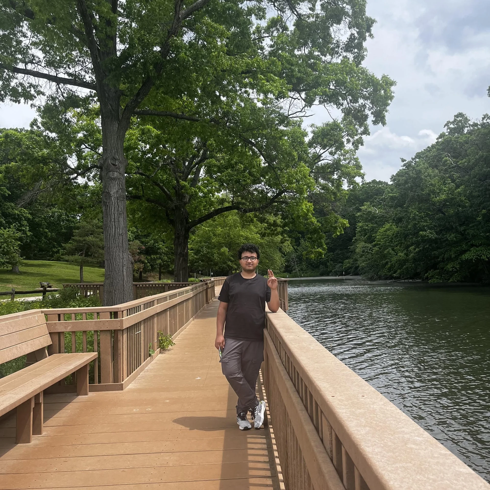
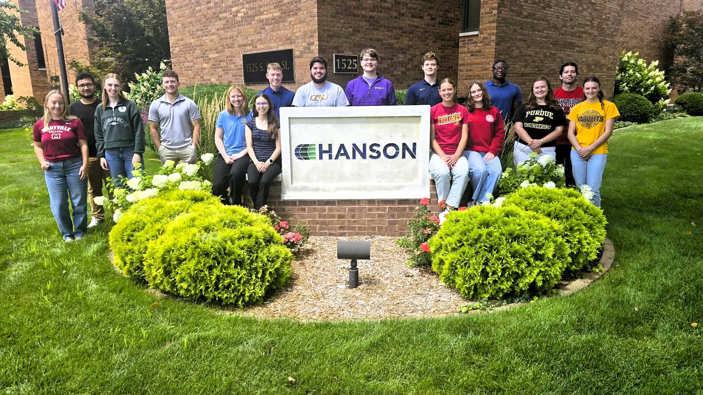

Rainfall to runoff.
Watershed delineation, design-storm development, curve-number assignment, rain-on-grid modeling, and stormwater mitigation assessment.
HYDROLOGY / HYDRAULICS / GEOSPATIAL
BASED IN ILLINOIS, USAHi, I’m Bibas.
I turn complex water systems into clear engineering decisions. From citywide flood models to the infrastructure communities rely on.
Actual model animation · research at SIU Carbondale
RESEARCH DEPTH.
CONSULTING EXPERIENCE.
Design-storm scenarios
Critical bridges assessed
Culvert designs supported
Distribution-network GIS coverage
01 / SELECTED WORK
Explore the models, methods, and decisions behind my work in water resources.
Showing 8 projects
A CLOSER LOOK / CARBONDALE
A detention basin’s performance depends on more than the return period. Explore the modeled peak discharge at Location A across twelve design-storm scenarios.
Short, intense storms and longer-duration storms place different demands on storage. Testing both helps reveal the limits of a mitigation concept.
reduction in modeled
peak discharge
Source: Quarterly Meeting II Report, Table 6, p. 21. Candidate basin at one location; planning-level, uncalibrated simulation. These are screening results, not constructed or verified flood reductions.
| Storm | Duration | Existing (cfs) | With pond (cfs) | Reduction |
|---|
02 / MY APPROACH
Five connected stages. Each one links a modeling choice to the engineering question it needs to answer.
TOOLS OF THE TRADE
Watershed delineation, design-storm development, curve-number assignment, rain-on-grid modeling, and stormwater mitigation assessment.
Culvert sizing, headwater and overtopping assessment, bridge and culvert flow analysis, computational meshes, and sediment-volume estimation.
Terrain and land-cover processing, spatial analysis, repeatable workflows, infrastructure asset management, and DGPS field verification.

03 / ABOUT ME
I’m a civil engineer focused on understanding how water moves through landscapes, cities, and infrastructure.
My experience spans Kathmandu’s water-distribution network, city-funded flood research in Carbondale, and transportation hydraulics at Hanson Professional Services. I bring together field data, spatial analysis, and numerical modeling to support engineering decisions.
I’m pursuing an MS in Civil Engineering at Southern Illinois University Carbondale, concentrating in Water Resources and Hydrology. As a Graduate Research Assistant, I contribute to the City of Carbondale’s stormwater master planning work.
MS in Civil Engineering · Graduate Research Assistant
Water Resources Intern · Springfield, Illinois
GIS Expert · Melamchi Water Supply Project, Nepal
Bachelor of Engineering in Civil Engineering
BEYOND THE MODEL
Technical work becomes useful when people can act on it. I bring the same attention to documentation, coordination, and communication that I bring to a model.
2026 ASCE Mid-America Student Symposium · Communications Lead

04 / LET’S CONNECT
LinkedIn ↗Water resources. Resilient infrastructure.
A more informed next decision.